Next: Trigonometry Functions Up: Built-in operations & functions Previous: Boolean Operations
| FUNCTION | DEFINITION |
abs |
Absolute value of x. (eg: abs(x)) |
avg |
Average of all the inputs. (eg: avg(x,y,z,w,u,v) == (x + y + z + w + u + v) / 6) |
ceil |
Smallest integer that is greater than or equal to x. |
clamp |
Clamp x in range between r0 and r1, where r0 < r1. (eg:
clamp(r0,x,r1)) |
equal |
Equality test between x and y using normalised epsilon |
erf |
Error function of x. (eg: erf(x)) |
erfc |
Complimentary error function of x. (eg: erfc(x)) |
exp |
 (eg: (eg: exp(x)) |
expm1 |
 where where  is very small. (eg: is very small. (eg: expm1(x)) |
floor |
Largest integer that is less than or equal to x. (eg: floor(x)) |
frac |
Fractional portion of x. (eg: frac(x)) |
hypot |
 (eg: (eg: hypot(x,y) = sqrt(x*x + y*y)) |
iclamp |
Inverse-clamp x outside of the range r0 and r1. Where
r0 < r1. If x is within the range it will snap to the closest
bound. (eg: iclamp(r0,x,r1)
 )
) |
inrange |
In-range returns 'true' when is within the range ![$[r_0,r_1]$](img234.png) . Where . Where  . (eg: . (eg: inrange(r0,x,r1)) |
log |
Natural logarithm  . (eg: . (eg: log(x)) |
log10 |
 . (eg: . (eg: log10(x)) |
log1p |
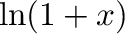, where is very small. (eg: log1p(x)) |
log2 |
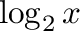. (eg: log2(x)) |
logn |
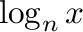, where 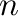 is a positive integer. (eg: logn(x,8)) |
max |
Largest value of all the inputs. (eg: max(x,y,z,w,u,v)) |
min |
Smallest value of all the inputs. (eg: min(x,y,z,w,u)) |
mul |
Product of all the inputs. (eg: mul(x,y,z,w,u,v,t) == (x * y * z * w * u * v * t)) |
ncdf |
Normal cumulative distribution function. (eg: ncdf(x)) |
nequal |
Not-equal test between and  using normalised epsilon using normalised epsilon |
pow |
 . (eg: . (eg: pow(x,y) == x ^ y) |
root |
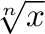, where is a positive integer. (eg: root(x,3) == x^(1/3)) |
round |
Round to the nearest integer. (eg: round(x)) |
roundn |
Round to decimal places (eg: roundn(x,3))
where 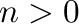 is an integer. (eg: roundn(1.2345678,4) == 1.2346) |
sgn |
Sign of , 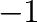 where 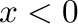, +1 where 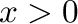, else zero.
(eg: sgn(x)) |
sqrt |
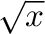, where 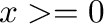. (eg: sqrt(x)) |
sum |
Sum of all the inputs. (eg: sum(x,y,z,w,u,v,t) == (x + y + z + w + u + v + t)) |
swap |
|
<=> |
Swap the values of the variables x and y and return the current value of y. (eg: swap(x,y) or x <=> y) |
trunc |
Integer portion of x. (eg: trunc(x)) |